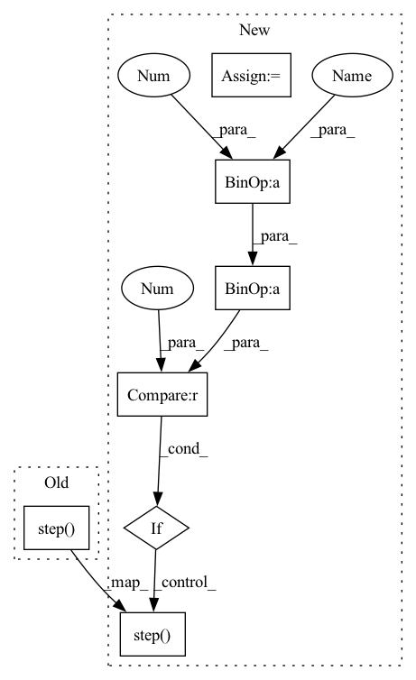

Pattern ID :10428

Before Change
if is_train:
model.zero_grad()
loss.backward()
optimizer.step()
total_loss += loss.item()
tqdm_bar.set_description("{} Epoch: [{}] Loss: {:.4f}".format(desc, epoch, loss.item()))
After Change
_, z_j = model(x_j)
loss = loss_func(z_i, z_j)
loss /= args.accumulation_steps
if is_train:
loss.backward()
if (i + 1) % args.accumulation_steps == 0 and is_train:
optimizer.step()
model.zero_grad()
total_loss += loss.item()
In pattern: SUPERPATTERN
Frequency: 3
Non-data size: 7
Instances
Fragment ID: 36430474
Project Name: mdiephuis/simclr
Commit Name: 903e8cf101c5589645c09840b36dab214ce5e1a1
Time: 2020-03-09
Author: Maurits.Diephuis@unige.ch
File Name: train_features.py
M Class Name: AnonimousClass
N Class Name: AnonimousClass
M Method Name: train_validate(6)
N Method Name: train_validate(6)
M Parent Class:
N Parent Class:
M File Name: train_features.py
N File Name: train_features.py
M Start Line: 90
M End Line: 111
N Start Line: 94
N End Line: 123
'>
Before Change
loss = (1 - lambda_st) * loss_output_st + lambda_st * t_st * t_st * loss_KD
loss.backward()
self.optimizer.step()
self.writer.set_step((epoch - 1) * self.len_epoch + batch_idx)
self.train_metrics.update("loss", loss.item())
for met in self.metric_ftns:
After Change
self.student.train()
self.train_metrics.reset()
for batch_idx, (data, target) in enumerate(self.data_loader):
data, target = data.to(self.device), target.to(self.device)
output_tc = self.teacher(data)
// TODO: Find an elegant way to free the feature map and computation graph
output_tc = torch.tensor(output_tc.detach().cpu().numpy()).cuda()
output_st = self.student(data)
supervised_loss = self.criterion(output_st, target)
kd_loss = self.kd_criterion(output_st, output_tc)
loss = (1 - self.lamb) * supervised_loss + self.lamb* kd_loss
loss = loss / self.accumulation_steps
loss.backward()
if (batch_idx+1) % self.accumulation_steps == 0:
self.optimizer.step()
self.optimizer.zero_grad()
self.writer.set_step((epoch - 1) * self.len_epoch + batch_idx)
self.train_metrics.update("loss", loss.item())
'>
Fragment ID: 36430473
Project Name: lehduong/knowledge-distillation-by-replacing-cheap-conv
Commit Name: 6a2fac62789427919e4a6d91296bdb0801eecb79
Time: 2020-01-20
Author: oopsxilitol@gmail.com
File Name: trainer/trainer.py
M Class Name: TrainerTeacherAssistant
N Class Name: TrainerTeacherAssistant
M Method Name: _train_epoch(2)
N Method Name: _train_epoch(2)
M Parent Class: BaseTrainer,BaseKnowledgeDistillationTrainer
N Parent Class: BaseTrainer,BaseKnowledgeDistillationTrainer
M File Name: trainer/trainer.py
N File Name: trainer/trainer.py
M Start Line: 215
M End Line: 234
N Start Line: 174
N End Line: 193
'>
Before Change
output = self.model(data)
loss = self.criterion(output, target)
loss.backward()
self.optimizer.step()
self._logging(batch_idx, epoch, data, output, target, loss)
if batch_idx == self.len_epoch:
After Change
self.model.train()
self.train_metrics.reset()
for batch_idx, (data, target) in enumerate(self.data_loader):
data, target = data.to(self.device), target.to(self.device)
output = self.model(data)
loss = self.criterion(output, target)
loss = loss / self.accumulation_steps
loss.backward()
if (batch_idx+1) % self.accumulation_steps == 0:
self.optimizer.step()
self.optimizer.zero_grad()
self._logging(batch_idx, epoch, data, output, target, loss)
'>
Fragment ID: 36430471
Project Name: lehduong/knowledge-distillation-by-replacing-cheap-conv
Commit Name: 6a2fac62789427919e4a6d91296bdb0801eecb79
Time: 2020-01-20
Author: oopsxilitol@gmail.com
File Name: trainer/trainer.py
M Class Name: Trainer
N Class Name: Trainer
M Method Name: _train_epoch(2)
N Method Name: _train_epoch(2)
M Parent Class: BaseTrainer
N Parent Class: BaseTrainer
M File Name: trainer/trainer.py
N File Name: trainer/trainer.py
M Start Line: 117
M End Line: 121
N Start Line: 68
N End Line: 79